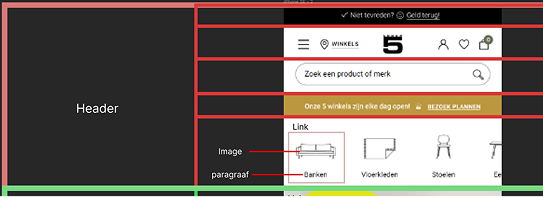

HTML/CSS – Loods5
HTML, CSS, JavaScript | 4-weekse opdracht (jaar 2)

Opdracht
Voor deze opdracht heb ik twee pagina’s van de website van Loods5 nagemaakt met HTML, CSS en JavaScript. Ik heb mij gericht op het zo nauwkeurig mogelijk reproduceren van de layout voor verschillende schermformaten.
Mijn verantwoordelijkheid was het bouwen van een toegankelijke, responsive website met een duidelijke structuur en goed georganiseerde code.
Breakdownschets
In de eerste week koos ik de pagina’s die ik wilde namaken en maakte ik breakdownschetsen. Zo kreeg ik inzicht in hoe de website is opgebouwd en in welke blokken de layout is verdeeld.
Coderen en Ontwikkelen
Na het maken van de schetsen begon ik met het schrijven van de HTML-structuur. Om overzicht te houden, werkte ik met duidelijke comments en semantische elementen.
De website is mobile-first opgebouwd. Ik gebruikte media queries voor tablet en desktop, en Flexbox en CSS Grid voor de layout. Ook maakte ik gebruik van display: flex en display: grid om elementen netjes te positioneren.
Toegankelijkheid & Thema
In week 3 en 4 heb ik getest op toegankelijkheid en gekeken naar kleurcontrast. Ik koos ervoor om een light/dark mode in te bouwen, zodat gebruikers de weergave kunnen aanpassen aan hun voorkeur.
Resultaat
Het eindresultaat is een volledig werkende, responsive en toegankelijke website die zowel technisch als visueel sterk aansluit op het origineel.
Bekijk de live website